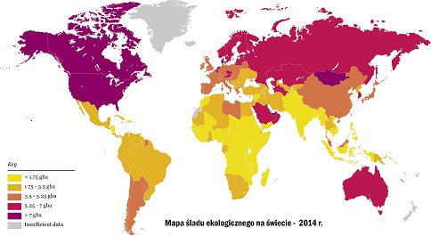

Nadmierna eksploatacja Ziemi prowadzona przez ludzi poważnie osłabia zdolność przyrody do podtrzymywania życia, funkcjonowania społeczeństw i gospodarek. W skali światowej przyroda dostarcza ludziom usługi ekosystemowe warte około 125 bilionów dolarów rocznie. Wskaźnik Living Planet (Wskaźnik Żyjącej Planety) pokazuje, że liczebność populacji kręgowców spadła aż o 60% w ciągu ostatnich 40 lat. Jeśli podtrzymamy aktualną tendencję to do 2050 roku mniej niż 10% lądu pozostanie wolne od śladów ingerencji człowieka. Biorąc pod uwagę wzajemne zależności pomiędzy zdrowiem a przyrodą, dobrobytem ludzi oraz przyszłością naszej planety, WWF wzywa międzynarodową społeczność do zjednoczenia się w celu zawarcia globalnej umowy na rzecz przyrody oraz ludzi, aby odwrócić tendencję zaniku różnorodności biologicznej.
Ukazujący się od 20 lat Living Planet Report w dwunastym wydaniu dostarcza dowody naukowe na to, o czym przyroda mówiła nam już niejednokrotnie. Brak zrównoważonej działalności człowieka popycha naturalne systemy planety, które wspierają życie na Ziemi, na skraj ich możliwości.
